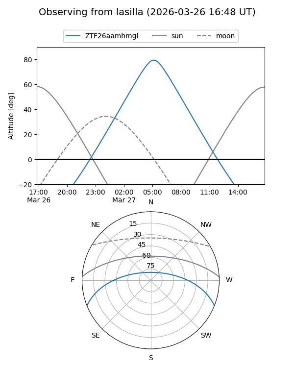
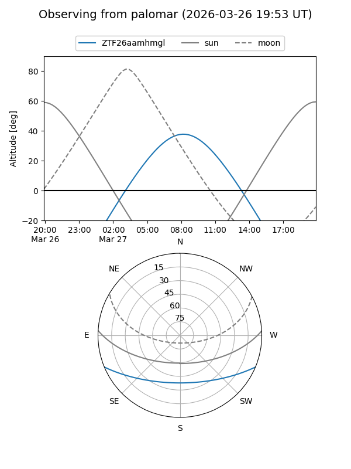

ZTF26aamhmgl
Target ZTF26aamhmgl at 2026-03-27 09:12
Aliases and brokers:
FINK: link
Lasair: link
ALeRCE: link
alt names
ZTF26aamhmgl (ztf,fink_ztf)
Coordinates:
equatorial (ra, dec) = 190.5476,-18.69948
equatorial (HMS+DMS) = 12:42:11.42,-18:41:58.14
galactic (l, b) = (299.8810,+44.11748)
Flags:
Photometry:
last ztfg=17.32
1 ztfg detections
Lightcurve
Visibility


Additional plots